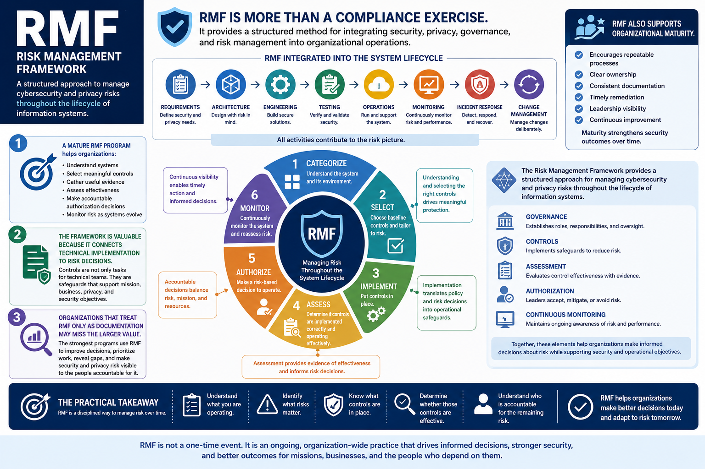

What Is RMF?
RMF as a Security Management Framework
Connecting to LMS... Progress: in progress
Version 1.0 | Date: 2026-06-16 | Educational overview of Risk Management Framework concepts.

Narration
RMF is more than a compliance exercise. It provides a structured method for integrating security, privacy, governance, and risk management into organizational operations.
A mature RMF program helps organizations understand systems, select meaningful controls, gather useful evidence, assess effectiveness, make accountable authorization decisions, and monitor risk as systems evolve.
RMF also supports organizational maturity. It encourages repeatable processes, clear ownership, consistent documentation, timely remediation, leadership visibility, and continuous improvement.
The framework is valuable because it connects technical implementation to risk decisions. Controls are not only tasks for technical teams. They are safeguards that support mission, business, privacy, and security objectives.
RMF works best when it is built into normal system lifecycle activities. Requirements, architecture, engineering, testing, operations, monitoring, incident response, and change management all contribute to the risk picture.
Organizations that treat RMF only as documentation may miss the larger value. The strongest programs use RMF to improve decisions, prioritize work, reveal gaps, and make security and privacy risk visible to the people accountable for it.
The Risk Management Framework provides a structured approach for managing cybersecurity and privacy risks throughout the lifecycle of information systems. By integrating governance, controls, assessment, authorization, and continuous monitoring, RMF helps organizations make informed decisions about risk while supporting security and operational objectives.
The practical takeaway is straightforward: RMF is a disciplined way to manage risk over time. It helps organizations understand what they are operating, what risks matter, what controls are in place, whether those controls are effective, and who is accountable for the remaining risk.